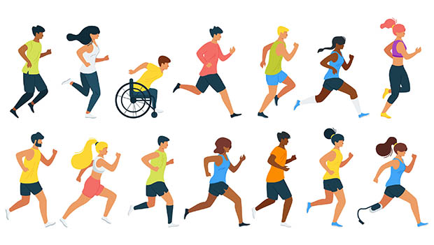
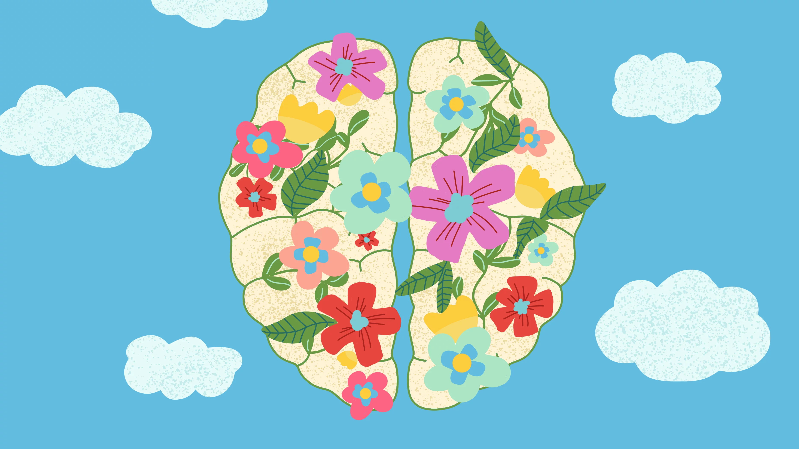
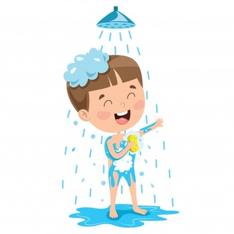

Anger is an intense emotional state whereby you may feel irritated, frustrated and resentful. Physical symptoms of anger can include tense muscles, an increased heart rate, feeling hot and shaking. and Remember, if your outbursts can be violent it is important to seek professional support to manage your anger.



So, how can you deal with feeling angry?
Exercising can be highly effective for releasing pent up energy.
Practicing mindfulness can help you to be aware of your anger and help calm your mind and body.
To stop your anger from escalting you could use distraction techniques. For example, you could try taking a cold shower, dancing to upbeat music or journalling.